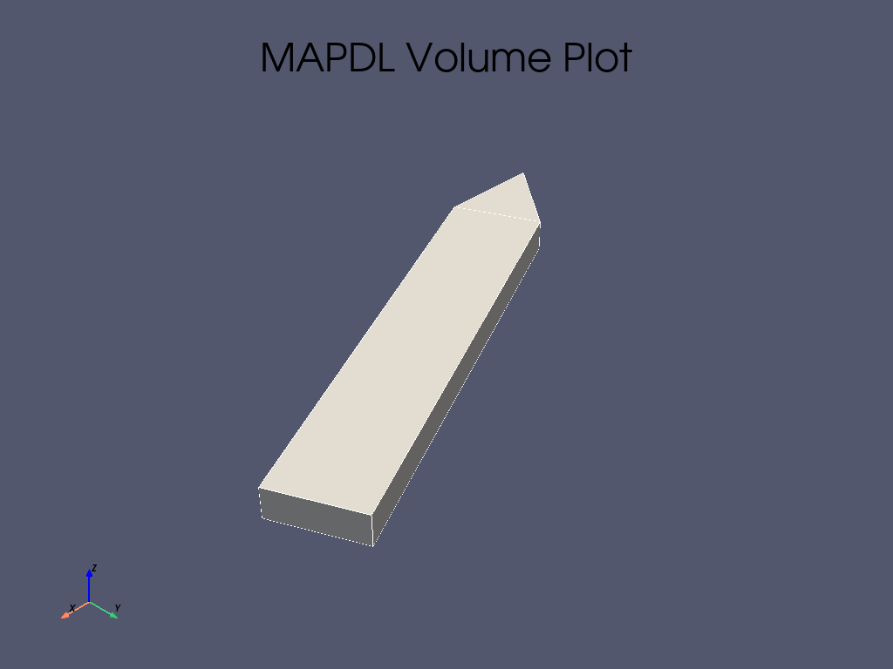

Note
Go to the end to download the full example code
循环对称分析#
本示例使用循环扇形的参数几何创建了一个叶盘，然后对该循环扇形进行模态分析。 然后，我们使用传统的 MAPDL reader 对结果进行后处理，最后使用参数建模器生成另一个循环模型。
我们的第一项任务是创建一个包含 7 个扇区的简单循环模型。

首先，将 MAPDL 作为服务启动。
import numpy as np
import pyvista as pv
from ansys.mapdl.core import launch_mapdl
mapdl = launch_mapdl()
Create the Cyclic Sector#
为我们的循环模型创建一个 “扇形”。
def gen_sector(mapdl, sectors): # 这里 `mapdl` 竟然可以当作一个函数里的参数？ ————ff
"""在 MAPDL 中生成一个扇形。"""
# 厚度
thickness = 0.003 # 单位：m
arc_end = 2 * np.pi / sectors
arc_cent = arc_end / 2
# 半径
rad = 0.01 # m
arc = pv.CircularArc(
[rad, 0, 0],
[np.cos(arc_end) * rad, np.sin(arc_end) * rad, 0],
[0, 0, 0],
)
# 内圆
kp_begin = [rad, 0, 0]
kp_end = [np.cos(arc_end) * rad, np.sin(arc_end) * rad, 0]
kp_center = [0, 0, 0]
# 外圆
out_rad = 5.2e-2
# 求出角度，以获得末端相同的弧长
cent_ang = arc.length / out_rad / 2
# 内圈
kp_beg_outer = [
np.cos(arc_cent - cent_ang) * out_rad,
np.sin(arc_cent - cent_ang) * out_rad,
0,
]
kp_end_outer = [
np.cos(arc_cent + cent_ang) * out_rad,
np.sin(arc_cent + cent_ang) * out_rad,
0,
]
mapdl.prep7()
mapdl.k(0, *kp_center) # 这里*kp_center 将 kp_center 列表中的元素拆分为单独的参数传递给 mapdl.k 函数。
mapdl.k(0, *kp_begin)
mapdl.k(0, *kp_end)
mapdl.k(0, *kp_beg_outer)
mapdl.k(0, *kp_end_outer)
# inner arc
mapdl.l(1, 2) # left line
mapdl.l(1, 3) # right line
lnum_inter = mapdl.l(2, 3) # internal line
mapdl.al("all")
# outer "blade"
lnum = [lnum_inter, mapdl.l(4, 5), mapdl.l(2, 4), mapdl.l(3, 5)]
mapdl.al(*lnum)
# 按 ``厚度`` 在 Z 方向挤出模型
mapdl.vext("all", dz=thickness)
# 生成 7 扇形模型中的一个扇形
sectors = 7
gen_sector(mapdl, sectors)
# Volume plot
mapdl.vplot()

- 
Make the Model Cyclic#
运行 Mapdl.cyclic() 使模型循环运行
请注意扇形的数量是如何匹配的
output = mapdl.cyclic()
print(f"Expected Sectors: {sectors}")
print(output)
Expected Sectors: 7
USE EXISTING MODEL FOR CYCLIC SYMMETRY
******************************************************
****** COMPUTED QUANTITIES ***************************
******************************************************
* NUMBER OF SECTORS = 7 *
* SECTOR ANGLE = 51.429 *
* CYCLIC COORDINATE SYSTEM = 1 *
* EDGE COMPONENTS CONTAIN AREAS *
* LOW EDGE COMPONENT = CYCLIC_M01L MATCHED *
* HIGH EDGE COMPONENT = CYCLIC_M01H *
******************************************************
Generate the mesh#
使用四面体 SOLID186 生成有限元网格。
Apply Material Properties#
# 定义一种材料（公称钢，单位为 SI，国际单位制）
mapdl.mp("EX", 1, 210e9) # Elastic moduli in Pa (kg/(m*s**2))
mapdl.mp("DENS", 1, 7800) # Density in kg/m3
mapdl.mp("NUXY", 1, 0.3) # Poisson's Ratio
# 将其应用于所有元素
mapdl.emodif("ALL", "MAT", 1)
MODIFY ALL SELECTED ELEMENTS TO HAVE MAT = 1
Run the Modal Analysis#
让我们获取前 10 阶模态。请注意，这实际上是根据循环边界条件计算 (扇区/2)*nmode 。
output = mapdl.modal_analysis(nmode=10, freqb=1)
print(output)
*** NOTE *** CP = 0.438 TIME= 00:30:02
The automatic domain decomposition logic has selected the CYCHI domain
decomposition method with 1 processes per harmonic index solution.
*** NOTE *** CP = 0.438 TIME= 00:30:02
There is no title defined for this analysis.
*** WARNING *** CP = 0.500 TIME= 00:30:02
No constraints have been defined using the D command.
D I S T R I B U T E D D O M A I N D E C O M P O S E R
...Number of harmonic indices: 4
...Decompose to 2 harmonic index domains (with 1 processes per domain)
GENERATE CYCLIC SYMMETRY CONSTRAINT EQUATIONS
*** WARNING *** CP = 0.578 TIME= 00:30:02
There is no high edge node in a position to match low edge node 2545
(location error = 4.55E-04, maximum for all nodes). Cyclic symmetry
constraint equations will be generated between the sector edges using
a mapping procedure similar to the CEINTF command. This may reduce
solution accuracy, especially near the sector edges.
NUMBER OF CONSTRAINT EQUATIONS GENERATED= 363
(USING THE UNMATCHED NODES ALGORITHM)
***** MAPDL SOLVE COMMAND *****
*** SELECTION OF ELEMENT TECHNOLOGIES FOR APPLICABLE ELEMENTS ***
---GIVE SUGGESTIONS ONLY---
ELEMENT TYPE 1 IS SOLID186. KEYOPT(2) IS ALREADY SET AS SUGGESTED.
*** MAPDL - ENGINEERING ANALYSIS SYSTEM RELEASE 2023 R1 23.1 ***
Ansys Mechanical Enterprise
20120530 VERSION=WINDOWS x64 00:30:02 JAN 24, 2024 CP= 0.578
S O L U T I O N O P T I O N S
PROBLEM DIMENSIONALITY. . . . . . . . . . . . .3-D
CYCLIC SYMMETRY SECTOR ANGLE. . . . . . . . . . 51.429 DEGREES
DEGREES OF FREEDOM. . . . . . UX UY UZ
ANALYSIS TYPE . . . . . . . . . . . . . . . . .MODAL
EXTRACTION METHOD. . . . . . . . . . . . . .BLOCK LANCZOS
NUMBER OF MODES TO EXTRACT. . . . . . . . . . . 10
USE CYCLIC MODES IN SUBSEQUENT MSUP ANALYSIS. .YES
SHIFT POINT . . . . . . . . . . . . . . . . . . 1.0000
GLOBALLY ASSEMBLED MATRIX . . . . . . . . . . .SYMMETRIC
NUMBER OF MODES TO EXPAND . . . . . . . . . . . 10
ELEMENT RESULTS CALCULATION . . . . . . . . . .OFF
*** NOTE *** CP = 0.578 TIME= 00:30:02
The conditions for direct assembly have been met. No .emat or .erot
files will be produced.
L O A D S T E P O P T I O N S
LOAD STEP NUMBER. . . . . . . . . . . . . . . . 1
CYCLIC SYMMETRY HARMONIC INDEX. . . . . . . . . 0
THERMAL STRAINS INCLUDED IN THE LOAD VECTOR . . YES
PRINT OUTPUT CONTROLS . . . . . . . . . . . . .NO PRINTOUT
DATABASE OUTPUT CONTROLS. . . . . . . . . . . .ALL DATA WRITTEN
*** WARNING *** CP = 0.641 TIME= 00:30:02
There is no high edge node in a position to match low edge node 2545
(location error = 4.55E-04, maximum for all nodes). Cyclic symmetry
constraint equations will be generated between the sector edges using
a mapping procedure similar to the CEINTF command. This may reduce
solution accuracy, especially near the sector edges.
**** CENTER OF MASS, MASS, AND MASS MOMENTS OF INERTIA ****
CALCULATIONS ASSUME ELEMENT MASS AT ELEMENT CENTROID
TOTAL MASS = 0.19205E-01
MOM. OF INERTIA MOM. OF INERTIA
CENTER OF MASS ABOUT ORIGIN ABOUT CENTER OF MASS
XC = 0.25304E-01 IXX = 0.3686E-05 IXX = 0.7910E-06
YC = 0.12186E-01 IYY = 0.1533E-04 IYY = 0.2994E-05
ZC = 0.15000E-02 IZZ = 0.1891E-04 IZZ = 0.3759E-05
IXY = -0.7303E-05 IXY = -0.1381E-05
IYZ = -0.3510E-06 IYZ = 0.1412E-19
IZX = -0.7289E-06 IZX = 0.2565E-19
*** MASS SUMMARY BY ELEMENT TYPE ***
TYPE MASS
1 0.192050E-01
Range of element maximum matrix coefficients in global coordinates
Maximum = 267009240 at element 2656.
Minimum = 160766982 at element 2628.
*** ELEMENT MATRIX FORMULATION TIMES
TYPE NUMBER ENAME TOTAL CP AVE CP
1 2658 SOLID186 0.234 0.000088
Time at end of element matrix formulation CP = 0.90625.
BLOCK LANCZOS CALCULATION OF UP TO 10 EIGENVECTORS.
NUMBER OF EQUATIONS = 21460
MAXIMUM WAVEFRONT = 218
MAXIMUM MODES STORED = 10
MINIMUM EIGENVALUE = 0.10000E+01
MAXIMUM EIGENVALUE = 0.10000E+31
Memory allocated for solver = 116.527 MB
Memory required for in-core solution = 111.058 MB
Memory required for out-of-core solution = 36.935 MB
*** NOTE *** CP = 1.297 TIME= 00:30:02
The Sparse Matrix Solver used by the Block Lanczos eigensolver is
currently running in the in-core memory mode. This memory mode uses
the most amount of memory in order to avoid using the hard drive as
much as possible, which most often results in the fastest solution
time. This mode is recommended if enough physical memory is present
to accommodate all of the solver data.
Total memory available for LANCZOS = 25.134869 GB
Process memory required for in-core LANCZOS Workspace = 83.001320 MB
Process memory required for out-of-core LANCZOS Workspace = 2.447731 MB
Lanczos Memory Mode : INCORE
*** MAPDL - ENGINEERING ANALYSIS SYSTEM RELEASE 2023 R1 23.1 ***
Ansys Mechanical Enterprise
20120530 VERSION=WINDOWS x64 00:30:03 JAN 24, 2024 CP= 1.672
*** FREQUENCIES FROM BLOCK LANCZOS ITERATION ***
MODE FREQUENCY (HERTZ)
FREQUENCY RANGE REQUESTED= 10 MODES ABOVE 1.00000 HERTZ
1 1754.771705754
2 9255.308162400
3 10975.85412159
4 11515.65935183
5 21840.29313932
6 26924.90084957
7 33190.68613001
8 34449.50279427
9 38316.64328069
10 56181.28668418
***** PARTICIPATION FACTOR AND MODAL MASS CALCULATION ***** HARMONIC INDEX= 0
GLOBAL GLOBAL PARTICIPATION
MODE FREQUENCY DIRECTION FACTOR EFFECTIVE MASS MODAL MASS
1 1754.77 UZ 0.10238E-09 0.10482E-19 7.0000
ROTZ 0.65166E-12 0.42466E-24
2 9255.31 UZ 0.24699E-09 0.61003E-19 7.0000
ROTZ -0.49917E-10 0.24917E-20
3 10975.9 UZ 0.10754E-07 0.11565E-15 7.0000
ROTZ -0.91366E-10 0.83478E-20
4 11515.7 UZ 0.51935E-08 0.26973E-16 7.0000
ROTZ -0.80792E-10 0.65273E-20
5 21840.3 UZ 0.21701E-08 0.47094E-17 7.0000
ROTZ -0.21049E-12 0.44305E-25
6 26924.9 UZ 0.24862E-08 0.61811E-17 7.0000
ROTZ -0.12438E-10 0.15471E-21
7 33190.7 UZ -0.59235E-08 0.35087E-16 7.0000
ROTZ 0.51218E-10 0.26233E-20
8 34449.5 UZ -0.97315E-09 0.94703E-18 7.0000
ROTZ 0.13593E-10 0.18477E-21
9 38316.6 UZ 0.15981E-08 0.25540E-17 7.0000
ROTZ -0.19885E-10 0.39540E-21
10 56181.3 UZ -0.18112E-09 0.32805E-19 7.0000
ROTZ 0.31673E-11 0.10031E-22
*** MAPDL BINARY FILE STATISTICS
BUFFER SIZE USED= 16384
32.688 MB WRITTEN ON ASSEMBLED MATRIX FILE: file0.full
2.062 MB WRITTEN ON MODAL MATRIX FILE: file0.mode
1.125 MB WRITTEN ON RESULTS FILE: file0.rst
GENERATE CYCLIC SYMMETRY CONSTRAINT EQUATIONS
NUMBER OF CONSTRAINT EQUATIONS GENERATED= 740
(USING THE UNMATCHED NODES ALGORITHM)
GENERATE CYCLIC SYMMETRY CONSTRAINT EQUATIONS
NUMBER OF CONSTRAINT EQUATIONS GENERATED= 726
(USING THE UNMATCHED NODES ALGORITHM)
***** MAPDL SOLVE COMMAND *****
*** MAPDL - ENGINEERING ANALYSIS SYSTEM RELEASE 2023 R1 23.1 ***
Ansys Mechanical Enterprise
20120530 VERSION=WINDOWS x64 00:30:03 JAN 24, 2024 CP= 1.703
L O A D S T E P O P T I O N S
LOAD STEP NUMBER. . . . . . . . . . . . . . . . 3
CYCLIC SYMMETRY HARMONIC INDEX. . . . . . . . . 2
THERMAL STRAINS INCLUDED IN THE LOAD VECTOR . . YES
PRINT OUTPUT CONTROLS . . . . . . . . . . . . .NO PRINTOUT
DATABASE OUTPUT CONTROLS. . . . . . . . . . . .ALL DATA WRITTEN
BLOCK LANCZOS CALCULATION OF UP TO 10 EIGENVECTORS.
NUMBER OF EQUATIONS = 42906
MAXIMUM WAVEFRONT = 300
MAXIMUM MODES STORED = 10
MINIMUM EIGENVALUE = 0.10000E+01
MAXIMUM EIGENVALUE = 0.10000E+31
Memory allocated for solver = 247.438 MB
Memory required for in-core solution = 235.819 MB
Memory required for out-of-core solution = 72.819 MB
*** NOTE *** CP = 2.562 TIME= 00:30:04
The Sparse Matrix Solver used by the Block Lanczos eigensolver is
currently running in the in-core memory mode. This memory mode uses
the most amount of memory in order to avoid using the hard drive as
much as possible, which most often results in the fastest solution
time. This mode is recommended if enough physical memory is present
to accommodate all of the solver data.
Total memory available for LANCZOS = 24.742760 GB
Process memory required for in-core LANCZOS Workspace = 165.465797 MB
Process memory required for out-of-core LANCZOS Workspace = 4.411171 MB
Lanczos Memory Mode : INCORE
*** MAPDL - ENGINEERING ANALYSIS SYSTEM RELEASE 2023 R1 23.1 ***
Ansys Mechanical Enterprise
20120530 VERSION=WINDOWS x64 00:30:05 JAN 24, 2024 CP= 3.484
*** FREQUENCIES FROM BLOCK LANCZOS ITERATION ***
MODE FREQUENCY (HERTZ)
FREQUENCY RANGE REQUESTED= 10 MODES ABOVE 1.00000 HERTZ
1 1057.619328531
2 1057.619328538
3 3380.530621120
4 3380.530621121
5 6319.874142942
6 6319.874142942
7 10091.65459692
8 10091.65459692
9 18041.41473794
10 18041.41473794
***** MODAL MASS CALCULATION ***** HARMONIC INDEX= 2
MODE FREQUENCY MODAL MASS
11 1057.62 3.5000
12 1057.62 3.5000
13 3380.53 3.5000
14 3380.53 3.5000
15 6319.87 3.5000
16 6319.87 3.5000
17 10091.7 3.5000
18 10091.7 3.5000
19 18041.4 3.5000
20 18041.4 3.5000
GENERATE CYCLIC SYMMETRY CONSTRAINT EQUATIONS
NUMBER OF CONSTRAINT EQUATIONS GENERATED= 726
(USING THE UNMATCHED NODES ALGORITHM)
Get the Results of the Cyclic Modal Analysis#
将模态分析中的谐波可视化。
更多详情，请参阅 Validation of a Modal Work Approach for Forced Response Analysis of Bladed Disks 或 Cyclic Symmetry Analysis Guide 。
Note
它使用传统的结果读取器(mapdl reader)，该读取器将在某个时候弃用，转而使用 DPF，但我们现在可以用它来制作一些精彩的动画。
有关循环结果后处理的更多详情，请参阅： * Understanding Nodal Diameters from a Cyclic Model Analysis * Cyclic symmetry examples
# 从 MAPDL 中抓取结果对象
result = mapdl.result
print(result)
PyMAPDL Result
Units : User Defined
Version : 23.1
Cyclic : True
Result Sets : 40
Nodes : 7279
Elements : 1329
Available Results:
NSL : Nodal displacements
List the Table of Harmonic Indices#
这是谐波指数表。该表为每个累积模态提供了相应的谐波指数。
C. Index Harmonic Index
0 0
1 0
2 0
3 0
4 0
5 0
6 0
7 0
8 0
9 0
10 1
11 -1
12 1
13 -1
14 1
15 -1
16 -1
17 1
18 -1
19 1
20 -2
21 2
22 -2
23 2
24 -2
25 2
26 -2
27 2
28 2
29 -2
30 -3
31 3
32 -3
33 3
34 -3
35 3
36 3
37 -3
38 3
39 -3
Generate an Animation of a Traveling Wave#
这是循环分析中第一个弯曲的节点直径 1。
在节点直径为 1 的情况下，我们可以用以下方法得到第一阶摩天（通常是叶片转子的第一种弯曲模式）：
mode_num = np.nonzero(result.harmonic_indices == 1)[0][0]
pv.global_theme.background = "w"
_ = result.animate_nodal_displacement(
11,
displacement_factor=5e-4,
movie_filename="traveling_wave11.gif",
n_frames=30,
off_screen=True,
loop=False,
add_text=False,
show_scalar_bar=False,
cmap="jet",
)
这是节点直径 3 的一阶扭转模态。
_ = result.animate_nodal_displacement(
36,
displacement_factor=2e-4,
movie_filename="traveling_wave36.gif",
n_frames=30,
off_screen=True,
loop=False,
add_text=False,
show_scalar_bar=False,
cmap="jet",
)
Parametric Geometry#
由于我们的几何体创建是脚本化的，因此可以创建任意数量的 “扇形” 结构。让我们用 20 个扇形创建一个更有趣的结构。
首先，确保清除 MAPDL，以便我们从头开始。
mapdl.clear()
mapdl.prep7()
# 生成 20 个扇形模型中的一个扇形
gen_sector(mapdl, 20)
# make it cyclic
mapdl.cyclic()
# Mesh it
esize = 0.001
mapdl.et(1, 186)
mapdl.esize(esize)
mapdl.vsweep("all")
# apply materials
mapdl.mp("EX", 1, 210e9) # Elastic moduli in Pa (kg/(m*s**2))
mapdl.mp("DENS", 1, 7800) # Density in kg/m3
mapdl.mp("NUXY", 1, 0.3) # Poisson's Ratio
mapdl.emodif("ALL", "MAT", 1)
# Run the modal analysis
output = mapdl.modal_analysis(nmode=6, freqb=1)
# 从 MAPDL 中抓取结果对象
result = mapdl.result
print(result)
PyMAPDL Result
Units : User Defined
Version : 23.1
Cyclic : True
Result Sets : 66
Nodes : 3496
Elements : 579
Available Results:
NSL : Nodal displacements
List the Table of Harmonic Indices#
请注意，这些模式的谐波指数最高可达 10，即 N/2，其中 N 是扇形数。
C. Index Harmonic Index
0 0
1 0
2 0
3 0
4 0
5 0
6 1
7 -1
8 -1
9 1
10 1
11 -1
12 -2
13 2
14 -2
15 2
16 2
17 -2
18 -3
19 3
20 -3
21 3
22 3
23 -3
24 4
25 -4
26 -4
27 4
28 4
29 -4
30 -5
31 5
32 -5
33 5
34 5
35 -5
36 6
37 -6
38 -6
39 6
40 6
41 -6
42 7
43 -7
44 -7
45 7
46 7
47 -7
48 8
49 -8
50 -8
51 8
52 -8
53 8
54 9
55 -9
56 -9
57 9
58 -9
59 9
60 10
61 10
62 10
63 10
64 10
65 10
Plot First Bend for Nodal Diameter 2#
请注意，由于该模态形状的节点直径为 2，因此可以清楚地看到两条节点线。
result.plot_nodal_displacement(
12, cpos="xy", cmap="jet", show_scalar_bar=False, add_text=False
)
Animate First Bend for Nodal Diameter 2#
最后，让我们以模态 12 的动画效果结束本示例，它对应于本示例模型第二个节点直径的一阶弯曲。
_ = result.animate_nodal_displacement(
12,
displacement_factor=2e-4,
movie_filename="traveling_wave12.gif",
n_frames=30,
off_screen=True,
loop=False,
add_text=False,
show_scalar_bar=False,
cmap="jet",
)
Total running time of the script: (0 minutes 16.871 seconds)